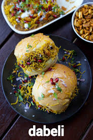

| Image | Dish | Popular Area | Description | Price |
|---|---|---|---|---|
 |
Vada Pav | J.M. Road | Spicy potato patty in a bun with chutney | ₹15 - ₹25 |
 |
Misal Pav | Nashik Phata | Sprout curry served with pav | ₹40 - ₹60 |
|  | Dabeli | Kothrud | Sweet & spicy mashed potato bun | ₹20 - ₹30 |
 |
Bhajji | Sarasbaug | Deep-fried fritters | ₹10 - ₹25 |
 |
Momos | FC Road | Steamed dumplings with spicy chutney | ₹50 - ₹70 |